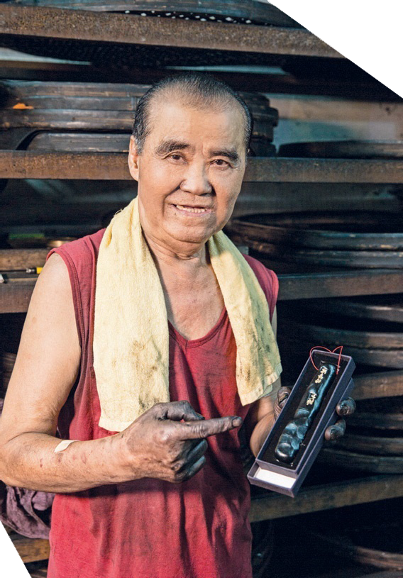

國寶級製墨大師
陳嘉德是「第10屆全球中華文藝薪傳獎—民俗工藝獎」得主，15歲自嘉義北上擔任製墨學徒，28歲自行創業，從事製墨工作近一甲子， 是台灣國寶級的手工製墨大師。
看著陳師父製墨過程的全心投入，以及製作時像是照顧家人一般的細心對待，這種專注堅持所帶給社會的正面感染力，或許正是傳統產業之所以為何延續的最大價值。

陳嘉德是「第10屆全球中華文藝薪傳獎—民俗工藝獎」得主，15歲自嘉義北上擔任製墨學徒，28歲自行創業，從事製墨工作近一甲子， 是台灣國寶級的手工製墨大師。
看著陳師父製墨過程的全心投入，以及製作時像是照顧家人一般的細心對待，這種專注堅持所帶給社會的正面感染力，或許正是傳統產業之所以為何延續的最大價值。